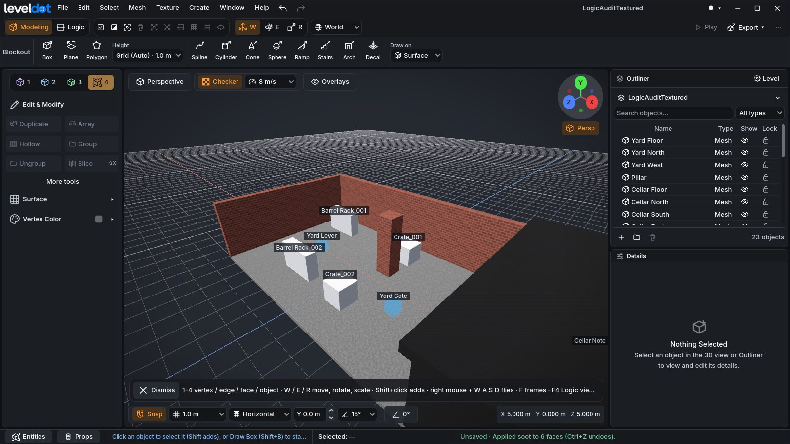
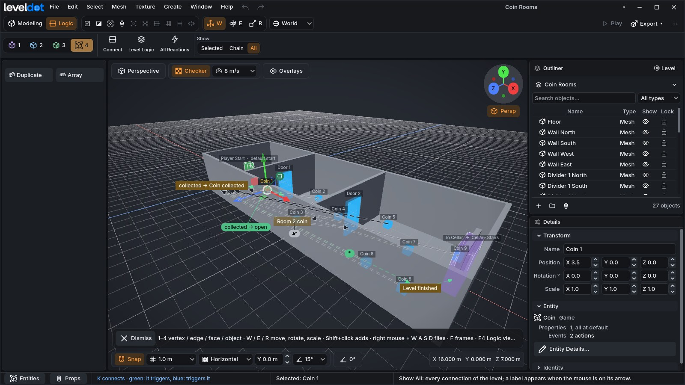
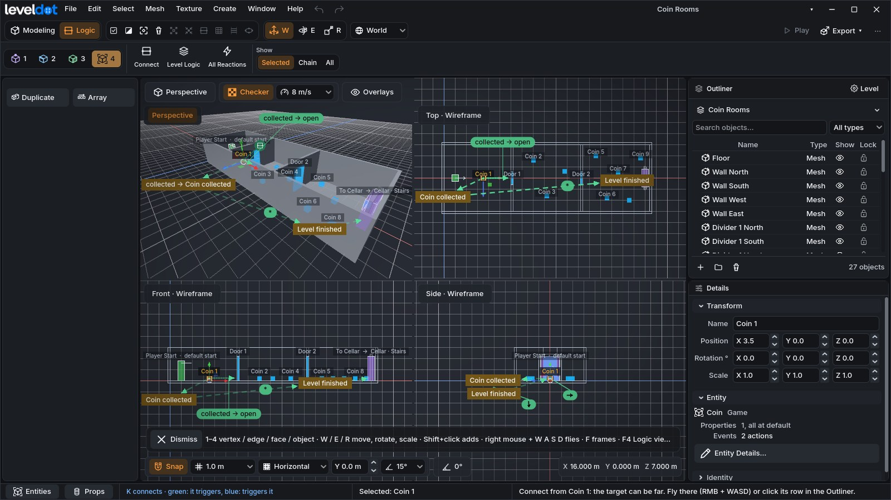
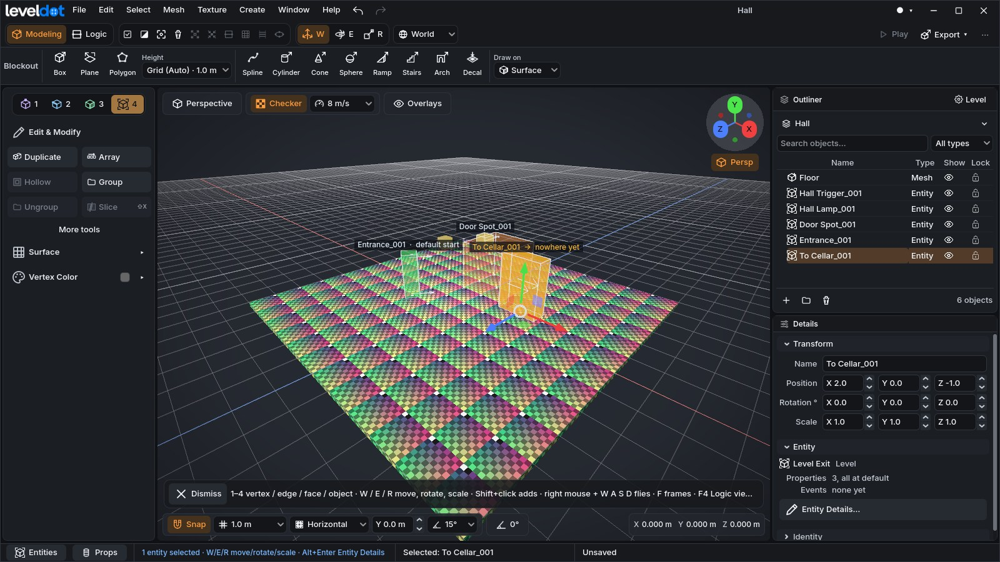
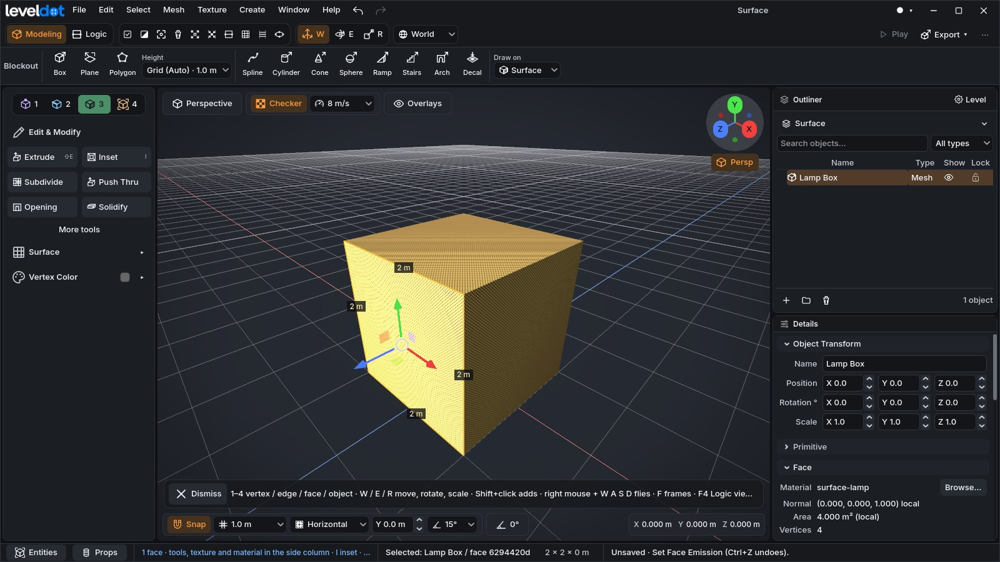

Block out in minutes
Draw boxes, planes, polygons, stairs, ramps, arches and cylinders on the grid or straight onto any surface, then pull up the height.
Level editor for Godot 4
Leveldot Editor is a standalone 3D level editor. Block out rooms, shape them with real modeling tools, texture them, place entities and connect them with simple logic. Save, and the level is in your Godot game.
Windows 10 or 11 (64-bit), a Vulkan graphics card. Games need Godot 4.4 or later.

Draw boxes, planes, polygons, stairs, ramps, arches and cylinders on the grid or straight onto any surface, then pull up the height.
Vertex, edge, face and object modes on 1–4, move, rotate and scale on W E R. Extrude, inset, bevel, loop cut, knife, booleans and openings for doors and windows.
Materials from your images, a prototype blockout set, fit, wrap and flow textures across faces, hotspot atlases, a UV editor, decals and vertex colours.
Place entities from your game and the built-in set (lights, effects, doors, lifts). Connect them: “when the player takes the coin, open the door”. The Logic view shows every connection.
A project holds all your levels. A Player Start says where the player appears, a Level Exit sends them to the next level.
Link your game once. Every save exports the levels and Godot refreshes them by itself; F5 plays the level you are editing. Your own scenes are never touched.




Get the ZIP from itch.io, extract it and run LeveldotEditor.exe. Nothing else to install.
Save a project, then File → Link Godot Project… and pick your game’s folder. How linking works.
The tutorial builds a small game step by step: rooms, coins, a door, a second level.